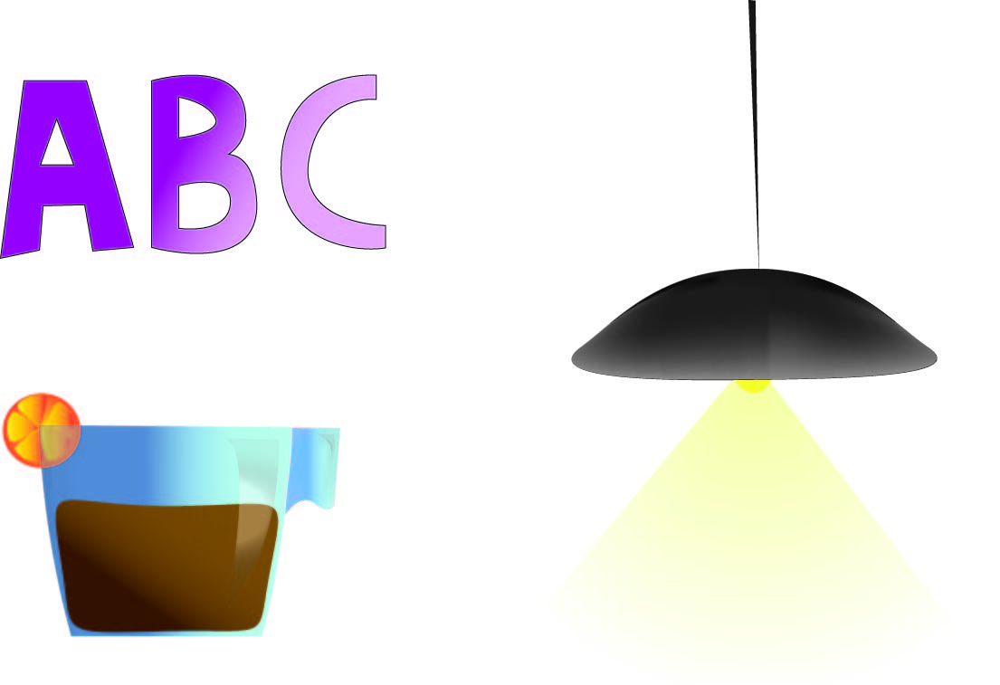
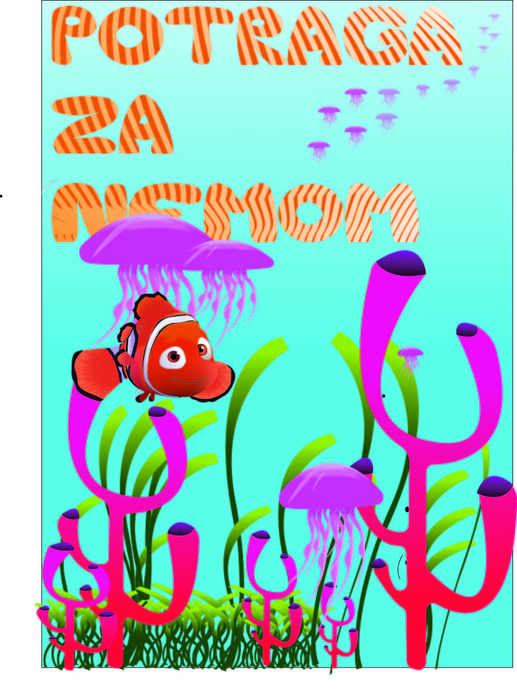
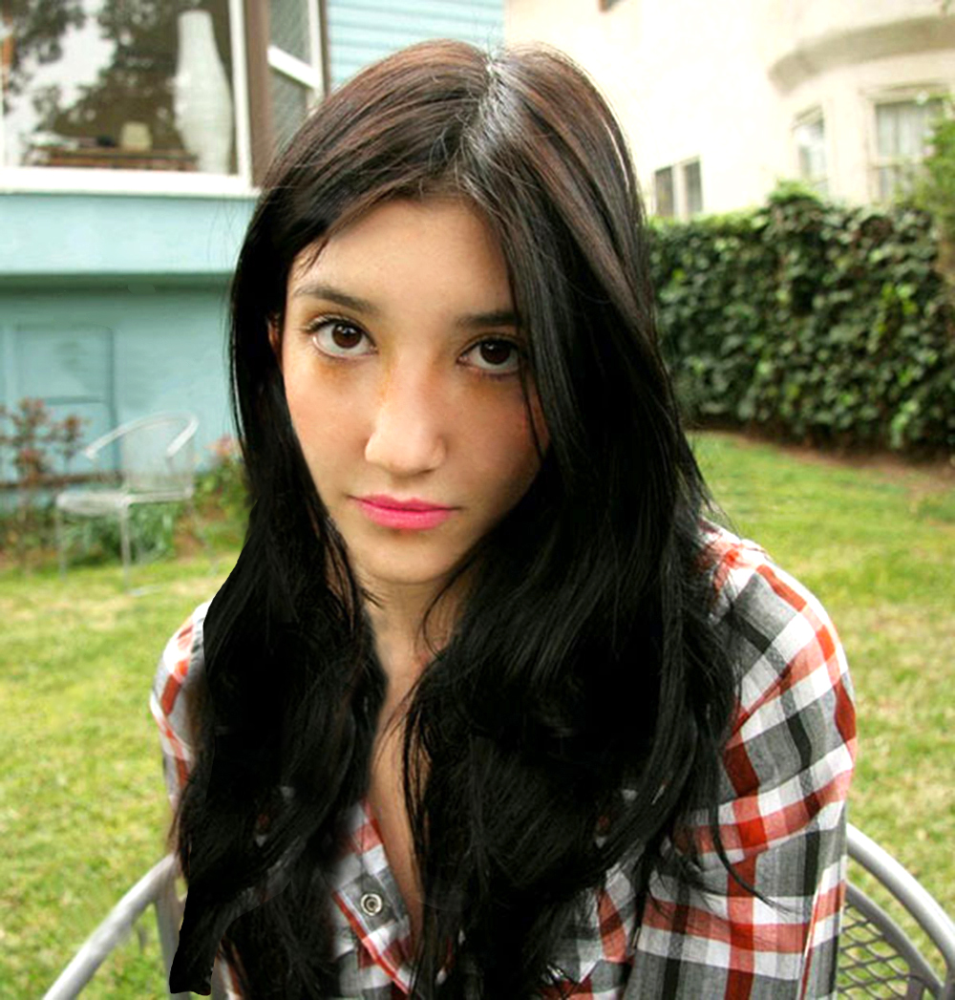
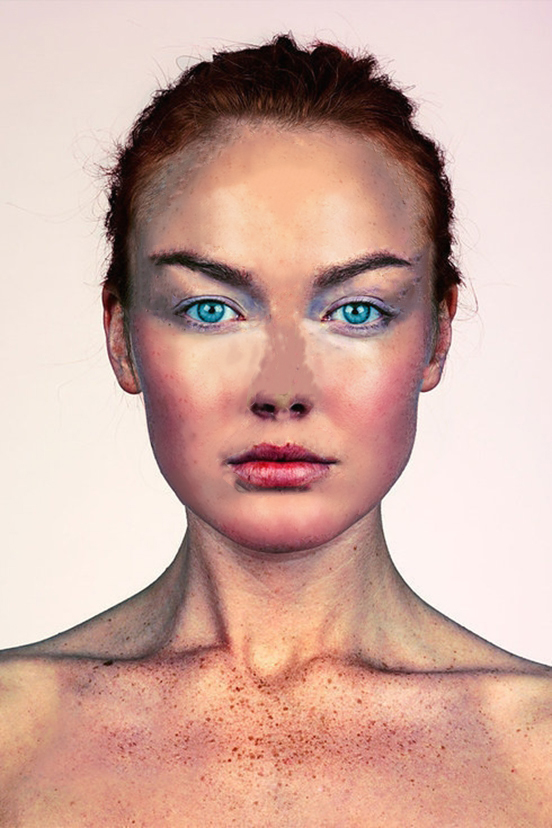
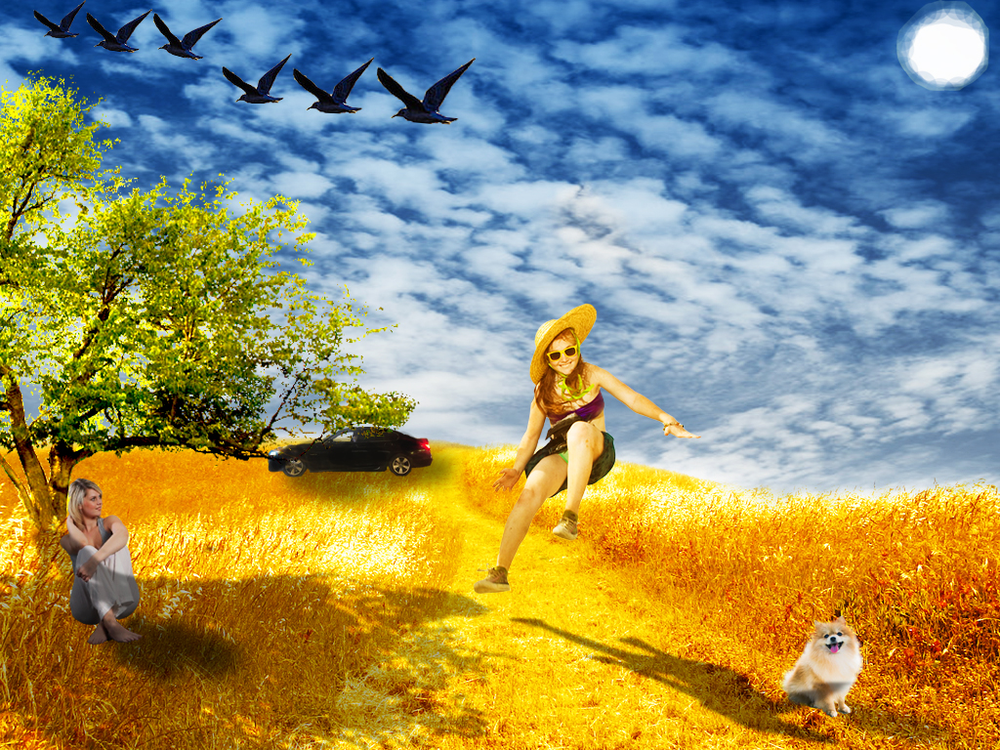
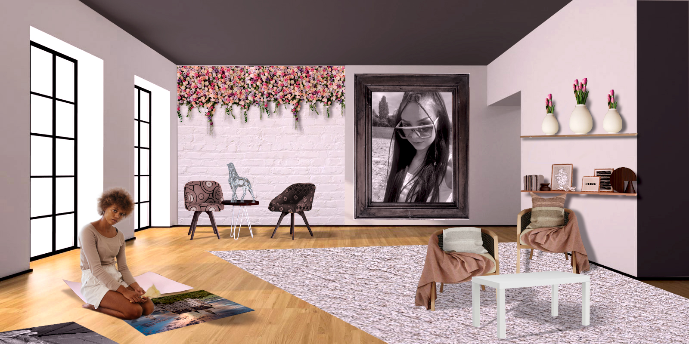
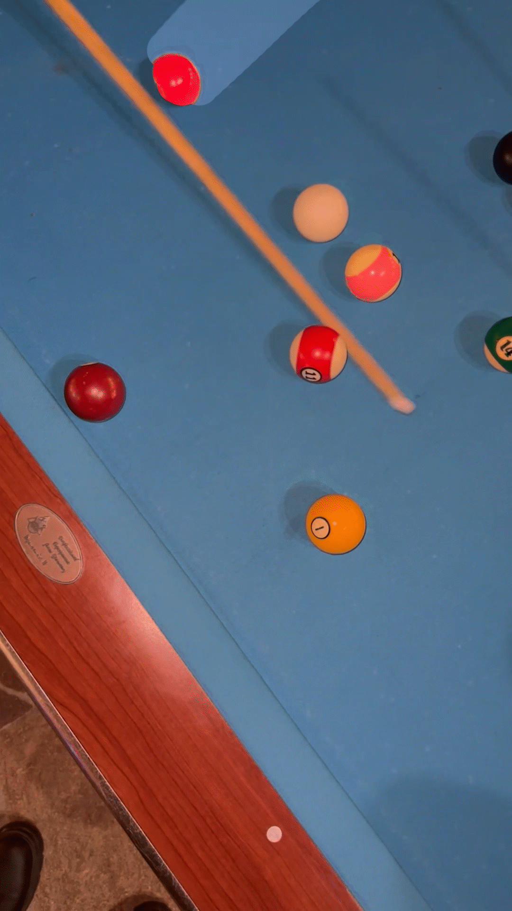
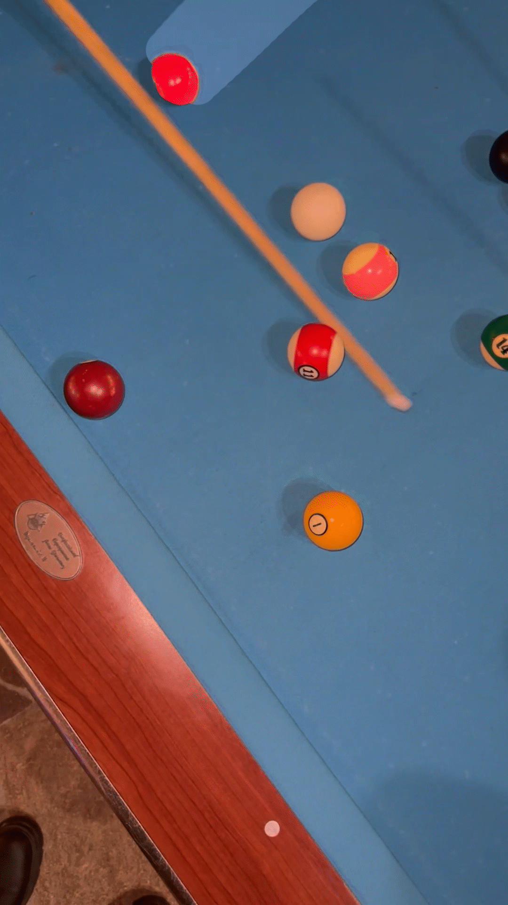

U programu ilustrator napravili smo puno vježbi i naučili smo se koristiti mnogim alatima. Prvo smo naučili nešto o crtanju Beizerovih krivulja u koordinatnom sustavu. Jedna od vježbi je bila da napravimo svoju vlastitu tipografiju. Potrebno je bilo iskoristiti prvo slovo svoga imena i prezimena i tim slovima radili smo masku, gdje su dobivene linije tvorile tijelo tipografije.

U ovoj vježbi bilo je potrebno kreirati složeni objekt u kojem se koriste tehnike spajanja i izrezivanja objekata. Također je zadatak bio da primjenimo različite vrste gradijenata što sam ja napravila na primjeru čaše i lampe.
Na ovom radu je prikazan moj prvi kolokvij iz digitalnih multimedija. Bilo je potrebno napraviti novu tipografiju koja je također prikazana u radu. Zadatak je bio da se prikaže flora i fauna podmorja, a na tu temu me asocirao film Potraga za Nemom što me inspiriralo da nacrtam njega te da većinu alata koju je trebalo iskoristiti, iskoristim baš na primjeru njega. Na ovom radu imate prilike vidjeti višestruke primjere samostalnih krivulja umnoženih alatom Blend, maskiranje, rotacije, smanjenje i povećanje, zrcaljenja, deiniranje swatch boja, transparencije…
U programu Photoshop smo naučili koristiti alate za retuširanje, alate za uklanjanje nedostataka na slici, korekcije boja, itd. Na navedenom primjeru bilo je potrebno maknuti smetnje i ogrebotine selektiranjem i alatom Lasso. Zatim kloniranje dijelova slike i prebacivanje na druge dijelove. To sam napravila na primjeru kose. Također smo naučili izrezati veći dio slike i kopirati ga u layer. Koristili smo se i alatima za posvjetljivanje i tamnjenje te korekcijom boje i svjetline cijele slike.
Istim tim alatima sam se koristila i u slici ispod, samo na primjerima nepravilnosti lica.
Osim retuširanja i ostalih alata koje sam spomenula, naučili smo se što je fotomontaža i kako se ona radi. U vježbi je bilo potrebno precizno izrezati i selektirati dijelove kako bi se oni što bolje uklopili u finalnu sliku. Također je bilo potrebno na te zalijepljene dijelove dodati sjenu kako bi oni djelovali što realnije. Ja sam na pozadinsku sliku dodala psa, auto, ženu ispod stabla, sunce i ptice i neke njihove sjene.
Za kraj sam u Photoshopu trebala napraviti projektni zadatak, kolokvij 2. Koristila sam se svim alatima i metodama koje sam naučila na vježbama prije, koje su već prikazane iznad. Bilo je potrebno prvo maknuti nedostatke i smetnje na pozadini selekcijama i retuširanjem, zatim potrebne dijelove pažljivo selektirati i zalijepiti te im dodati sjene. Također sam se služila tehnikama transformacije, koloriranja, maske i transparencije. Primjer maske se može vidjeti na slici, koja se nalazi na polici. Većina predmeta koja se nalazi na slici je izrezana i zalijepljena te su dodane sjene. Transparenciju sam koristila u sjeni, a koloriranje po cijeloj slici.
U programu Premiere Pro naučila sam izrađivati gifove i uređivati videe. Gifovi koje sam napravila su svijeća i loptice u biljaru. Oba gifa su napravljena na isti način. Prvo sam video isječke izrezala, a zatim sam im maknula originalni zvuk. Zatim sam iz videa uzela statičnu sliku i u programu Photoshop sam dodala transparenciju. Tako sam postigla da odabrani dio slike bude pomičan a ostatak statičan vrativši tu sliku u Premiere. Poslije sam to samo spremia kao gif.
 

Videe ispod sam uređivala na način da sam dva različita videa odrezala i stopila te isječke te im maknula zvuk i dodala drugi. Također sam u videima dodala različite efekte i tekstove, jedan statičan i jedan pomičan.